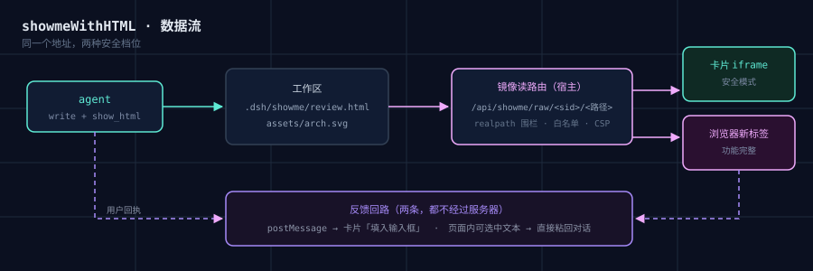

点上面的按钮换皮肤——标记一个字都不用改。预设就是「同一份内容上的四张皮」：AI 负责写语义标记，你负责挑视觉语言。快捷键 1–4。
标题和正文差不多大，层级就塌了。四套皮肤之间差异最大的就是这条——尺度跨度。
该松的地方挤、该紧的地方散。预设把间距做成令牌，段落之间自然有呼吸。
五颜六色，但没有一处是在强调。瑞士那套几乎没有颜色，注意力全靠版面撑。
| 预设 | 签名 | 适合 | CSS 行数 |
|---|---|---|---|
| 柔和现代 soft | 浅灰底 · 白卡大圆角 · 柔和阴影 · 低对比 | 通用汇报、进展同步、长文阅读 | 186 |
| 瑞士国际主义 swiss | 白底 · 巨大标题 · 严格网格 · 无圆角 · 大留白 | 编辑部长文、结论多的分析 | 178 |
| 新野兽派 brutal | 黑粗边框 · 硬阴影 · 无圆角 · 强对比 · hover 位移 | 设计评审、多变体挑选 | 196 |
| 蓝图 blueprint | 深蓝底 + 网格 · 青色线条 · 全等宽 · 虚线框 | 架构、数据流、时序、依赖 | 188 |

<link>。.dsh/showme/presets/（宿主首次展示时自动落地，create-only）<link rel="stylesheet" href="presets/swiss.css">presets/index.json 里的 default —— 一行就能改url()；断网也完整<!-- 换皮肤就是改这一行 -->
<link rel="stylesheet" href="presets/brutal.css">
<!-- 内容用同一套语义标记，与皮肤无关 -->
<div class="page">
<header class="masthead"><div class="kicker">…</div><h1>…</h1></header>
<section class="section">
<h2>…</h2>
<div class="cols"><div class="card">…</div></div>
<table class="table">…</table>
<div class="callout">…</div>
</section>
</div>